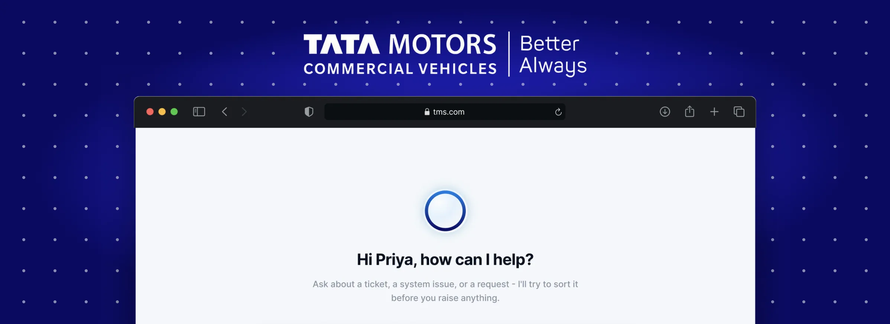
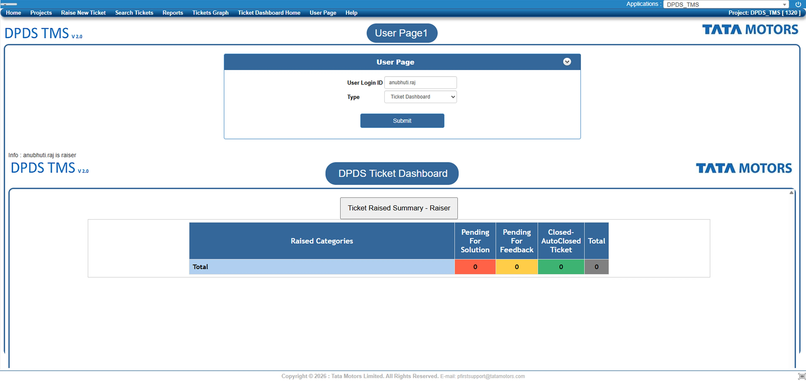
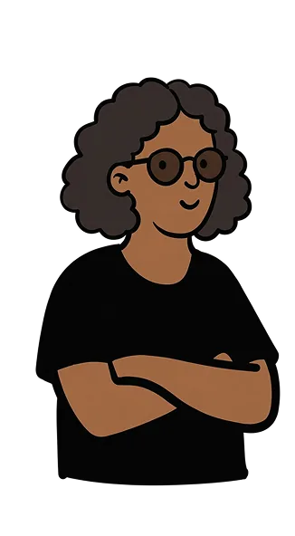
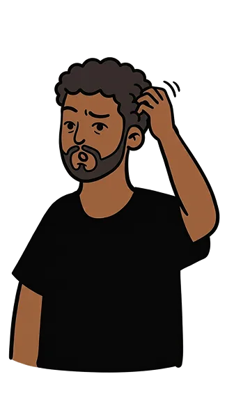
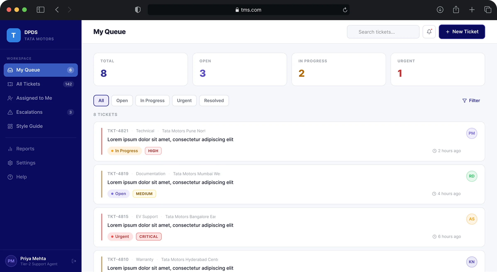
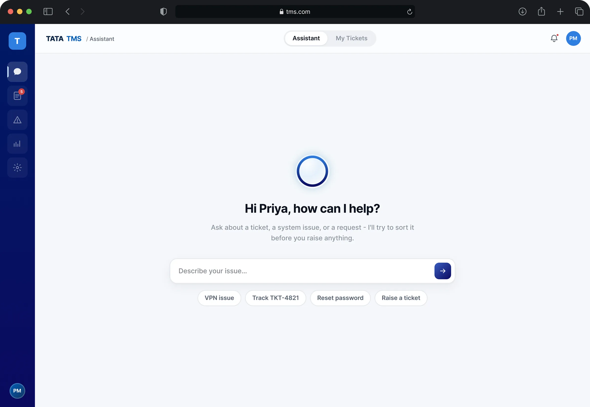
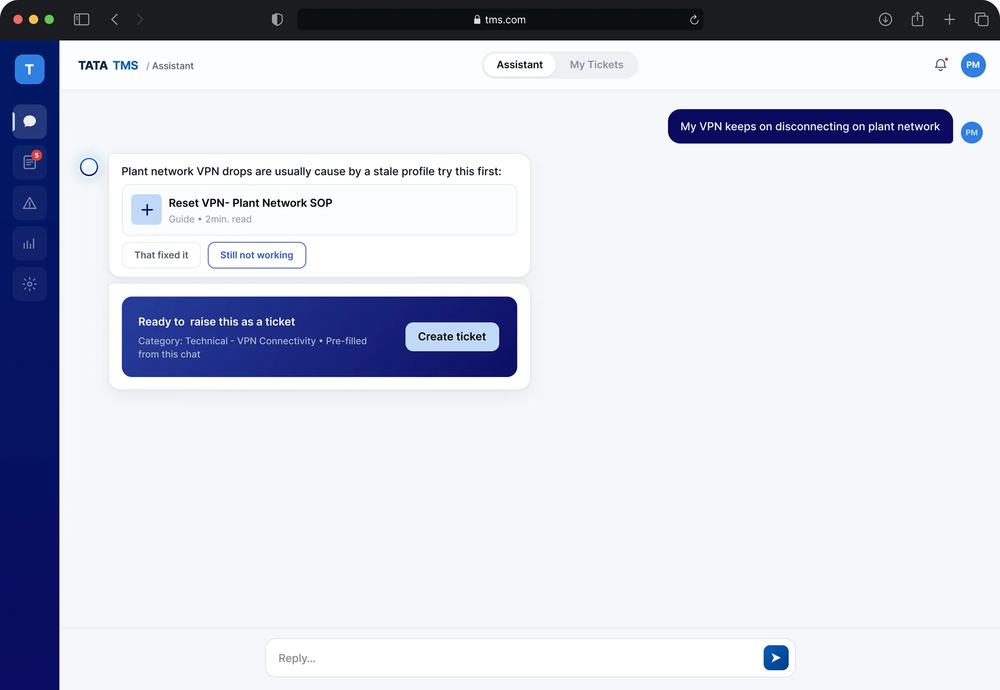
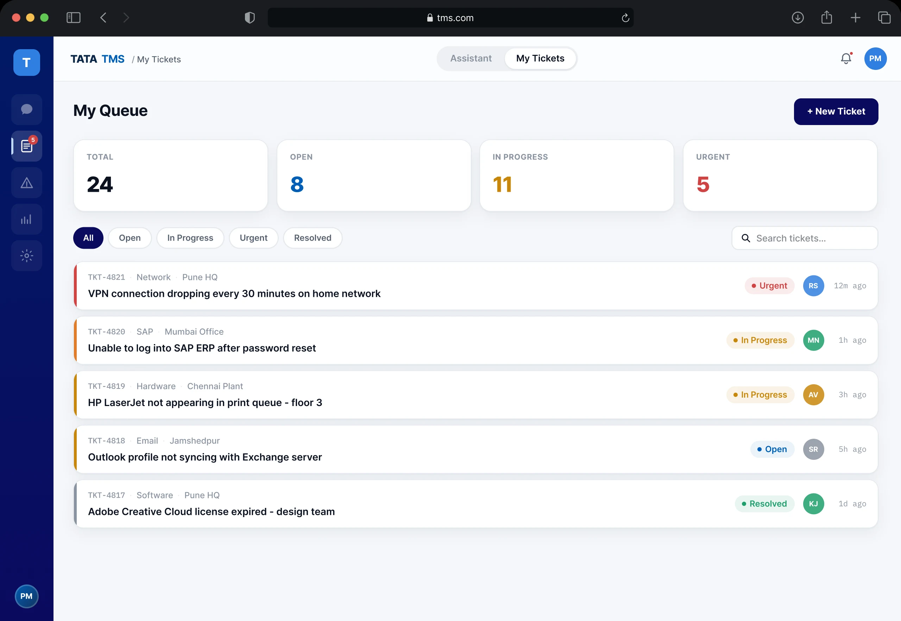

01 · OVERVIEW
Redesigning DPDS TMS
An internal helpdesk that answers your problem first, and raises a ticket only if it can't.
TMS, the Ticket Management System, is where people in Tata Motors' Digital Product Development System (DPDS) team report anything that's broken, from a VPN that keeps dropping to a password that expired. It hasn't kept pace with how the team has grown. My brief was to redesign it, and add an AI layer that helps people find answers before they need to file anything at all.
02 · WHAT I INHERITED
A ticketing system where you can't find how to raise a ticket
I raised test tickets myself, then sat beside colleagues while they raised real ones. One had been at Tata Motors for years and moved through TMS without thinking. The other was an intern who had just joined.
The intern got stuck on the very first page. It wasn't a dashboard, and nothing on it said how to raise a ticket. They had to spot the right link in the nav, open the ticket dashboard, and only then find Raise Ticket.

The current TMS user page. Hover or tap a number to see what I found.
The veteran knew where to click. The intern had nothing on the page to tell them.
I also audited the full navigation and information architecture. The structure itself stays under Tata Motors' NDA.
so I looked at how bigger tools handle it
03 · WHY IT MATTERS
The gap isn't an opinion. It's a feature list.
I compared TMS with ServiceNow and Jira Service Management, two tools large teams use for the same job.
The big tools try to answer you before you raise a ticket. TMS had no before, only a form.
but who was filling in that form?
04 · TWO PEOPLE, SAME TICKET
The form doesn't know who's talking
Sitting with people while they raised tickets, I kept seeing two very different people at the same submit button. The form asked both of them for a severity level.

TECHNICAL STAFF
Filing a real fault and wants precision. Severity, location, timestamp, and a way to track it closely.
“VPN connection dropping every 30 minutes on home network.”
EVERYONE ELSE
Wants one thing fixed, like a password or a badge, and has no patience for an engineer's form.
“Can't log in, think my password expired.”

One form can't serve both of them without failing one.
so I started with the dashboard
05 · THE FIRST ATTEMPT
Everyone liked my first version. That was the problem.

Iteration 1, a cleaner queue.
A cleaner queue with status counts and filters, and a clear New Ticket button. My colleagues loved it. “This is so much better.”
Then I showed my GM. He liked it too, and added that to raise a ticket he'd still click New Ticket and fill out the form. He didn't mean it as a problem. Everyone was so used to the form that nobody questioned it.
Nobody asked why you have to fill in a form at all. So I did.
The queue still mattered for tracking. It just couldn't be the front door. I weighed two other ways to fix the form before letting go of it.
A smarter form
Fields that change with the category. But you still have to know your category first.
Two forms
One for technical staff, one for everyone else. But then people have to decide which one they are.
Ask what's wrong
Let people say it in their own words, and let the system do the sorting.
06 · THE PIVOT
What if TMS started by listening?
People already explain problems to a colleague in plain words, not in categories and dropdowns. So the new front door is a question.
Engineering asked me to keep it simple enough to build. And someone who has been at Tata Motors for thirty years shouldn't have to relearn anything. So every screen has as few elements as I could get away with. Follow Priya, whose VPN keeps dropping at the plant. Keep scrolling.



01First load
No form, no category picker. One question and a few likely starting points.
Why? The old page asked for an ID before it showed anything. This one asks what's wrong.
02Describing the issue
She types it in her own words. A known fix comes first, the ticket second.
Why? If a two minute guide fixes it, the best ticket is the one never raised.
03Where it lands
The ticket arrives already filled in, with what she tried and what happened.
Why? Support staff still get the detail they need. It comes from the chat, not from Priya filling in fields.
IF THE ASSISTANT KNOWS THE FIX
The guide shows up in the chat with two buttons, That fixed it or Still not working. Nothing is raised unless she says so.
IF IT DOESN'T, OR GETS STUCK
She gets a ticket filled in from the chat, a second search, or a direct route to a person. Never a dead end.
Deciding whether something counts as a match is engineering's logic. I designed what happens on either side of it.
07 · THE SYSTEM UNDERNEATH
Built once, reused everywhere DPDS ships
Tata Motors' brand team gave me the brand guidelines and colours. I built the token system and the components, and audited every interactive state against WCAG AA.
TOKEN ARCHITECTURE
Primitives → semantic tokens → component bindings
Every color, space and radius below traces from a raw primitive, through a named semantic role, into the components that use it. A fix at any layer carries through everywhere that layer is used.
Why three layers? DPDS builds more than one tool. If the brand blue changes, I change one value, not every screen.
Primitives
Raw values: brand/blue, status/red, spacing/md…
Semantic tokens
Roles: accent/default, text/secondary, bg/inverse…
Component bindings
Button, Input, Badge, Card, Ticket Item…
PRIMITIVES
Color tokens
Two separate groups. Brand primitives carry Tata Motors' own palette. Status colors are kept apart and used only for urgent, warning and success states. Click a swatch to copy its token name and hex.
Why keep status colours apart? If red can be decoration, an urgent ticket stops looking urgent.
Brand · Tata Motors palette
Status · functional colours, not brand colours
PRIMITIVES
Type scale
Seven styles in Inter. Headings for structure, body for reading, labels for the small print on chips, pills and tickets.
Why seven? Enough for a dense ticket queue, few enough that nobody has to guess which one to use.
Raise a ticket in plain language
Raise a ticket in plain language
Raise a ticket in plain language
Raise a ticket in plain language
Raise a ticket in plain language
Raise a ticket in plain language
Raise a ticket in plain language
PRIMITIVES
Spacing and radius
A six step spacing scale and four radii. Chips and pills use full, cards use lg, inputs and buttons use md.
Why a fixed scale? Every gap becomes a decision made once, not a new one on every screen.
Spacing
Radius
COMPONENT BINDINGS
Core components, every real state
Click a state to see the component change between default, hover, focus, error and disabled, the way it behaves in the actual product.
Why design every state? A state I don't design is one a developer has to guess, and guesses are where bugs come from.
Button
accent/default → text/inverse
Input
border/default → border/focus
Badge / Status Chip
status/green → status/green-bg
Card
surface/default → surface/accent
VPN dropping on home network
Filed by Priya S. · 12 min ago
Ticket List Item
status stripe, meta row, avatar, timestamp
VPN dropping on home network
In Progress PS 12m agoCOMPONENT BINDINGS
Assistant components
The pieces the conversation is built from. Try it. Pick a starting point, then tell the assistant whether the guide worked.
Plant network VPN drops are usually caused by a stale profile. Try this first:
● Resolved Glad that worked. No ticket needed.
Ready to raise this as a ticket
COMPONENT BINDINGS
Stat card
The queue summary row from the ticket dashboard. Total, open, in progress and urgent counts, each in its own status color so the shape of the queue reads at a glance.
Total
128
Open
46
In Progress
57
Urgent
9
ACCESSIBILITY
WCAG AA contrast audit
Every text and background pair, checked against WCAG AA.
Why fix tokens, not screens? One change to a token fixed every place it was used.
See all 12 pairs
text/primary on bg/primarytext/primary on bg/secondarytext/secondary on bg/primaryWas 2.39. Darkened text/secondary from raw dark gray to a deeper shade.text/secondary on bg/secondaryWas 1.37. Same shade change as above.text/inverse on accent/default (button)text/inverse on bg/inverse (sidebar)accent/on-subtle-bg on bg/accent-subtleWas 2.77 with the default blue. The new token uses royal blue instead.status/error on status/error-bgstatus/warning on status/warning-bgWas 3.25. Darkened the warning text primitive.status/success on status/success-bgborder/focus on bg/primarydisabled/text on disabled/bgDisabled controls are exempt from AA. Low contrast is the correct signal here, so it is flagged rather than changed.08 · WHAT I DIDN'T SOLVE
Not everything here is settled
JUDGMENT CALL
A segmentation I read, not measured
Technical staff versus everyone else is a pattern I observed. It held up under stakeholder review, but it isn't based on a real sample.
UNRESOLVED
Less human review, by design
Pre filling a ticket from chat speeds things up, but it skips the moment where a person thinks the request through.
09 · WHERE IT STANDS
In review, ahead of the next build pass
Month 3 of 4. I presented it at the mid internship review, where the GM's feedback centered on clarity, and two or three colleagues responded well to how easy it was to use. That's early signal, not a structured usability study.
✓ VALIDATED
- Audit, competitive analysis, two iterations
- Pivot decision, grounded in the audit
- Informal stakeholder review
○ NOT YET
- No structured usability sessions on the assistant flow yet
- Fewer tickets is still a hypothesis, not yet measured
10 · WHAT I'D TRACK
Hypotheses, not results. Nothing below has real numbers yet
Ticket deflection rate
Issues resolved by the assistant before becoming a ticket.
Self service resolution rate
Of attempted resolutions, how many actually stick.
Time to resolution
Whether pre filled ticket context speeds up handling.
A system built to cut down tickets should be judged by whether it actually does. Measuring that is the next step.
धन्यवाद…